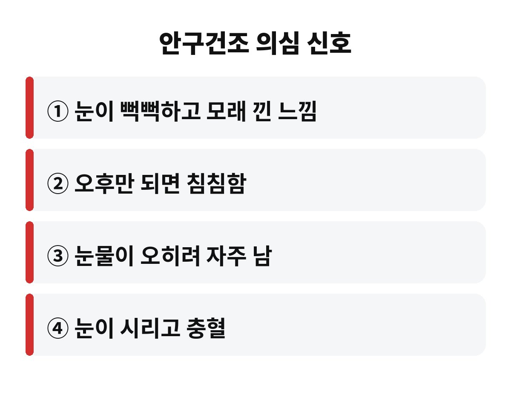

안구건조증 증상은 화면을 오래 볼수록, 난방을 켤수록 심해지기 쉽고, 집중해서 볼 때는 눈 깜빡임이 평소보다 눈에 띄게 줄어든다고 알려져 있습니다. 하루 종일 모니터 앞에 앉아 있는 직장인이라면, 오후만 되면 눈이 뻑뻑한 진짜 이유가 궁금하지 않으세요?
요즘 사무실 히터 켜기 시작했죠. 공기는 쨍하게 건조해지고 눈은 모래 들어간 것처럼 까끌까끌하고요. "나이 들어서 그런가?" 싶으셨다면, 사실 습관 때문일 가능성이 큽니다. 어렵지 않게 풀어 드릴게요.

대표적인 신호는 눈이 뻑뻑하고 이물감이 드는 거예요. 모래가 들어간 듯한 느낌, 눈이 시리고 충혈되는 느낌, 오후가 될수록 침침해지는 느낌이 있다면 눈물막이 불안정해졌다는 신호일 수 있습니다.
재미있는 건 눈이 너무 건조한데 오히려 눈물이 줄줄 흐르는 경우도 있다는 거예요. 눈이 자극받으면 반사적으로 눈물이 나오는데, 이 눈물은 눈 표면을 오래 촉촉하게 지켜 주는 질 좋은 눈물이 아닌 경우가 많거든요. 그래서 "눈물 나는데 무슨 건조증?" 하고 넘기면 놓치기 쉽습니다.
이유는 크게 두 가지입니다. 첫째는 화면 집중이에요. 모니터를 뚫어져라 볼 때 우리는 깜빡임이 줄어드는 경향이 있어서 눈물이 고르게 퍼질 기회가 줄어듭니다. 둘째는 건조한 공기예요. 히터와 에어컨 바람은 눈물이 증발하는 속도를 높입니다.
이 둘이 만나면 최악이죠. 깜빡임은 줄었는데 눈물은 더 빨리 마르니까요. 콘택트렌즈를 끼고 계신다면 더 불편할 수 있고, 마스크 위로 새어 나온 날숨이 눈 쪽으로 올라오는 것도 건조감을 키운다고 하니 참고하세요.
| 습관 | 눈에 미치는 영향 |
| 장시간 화면 집중 | 깜빡임 감소, 눈물막 불안정 |
| 히터·에어컨 바람 직접 노출 | 눈물 증발 가속 |
| 수면 부족 | 눈 피로 누적 |
인공눈물은 분명 도움이 됩니다. 다만 "뻑뻑할 때마다 계속" 넣는 식으로만 버티면 근본 원인인 습관은 그대로예요. 방부제가 들어 있는 제품은 자주 쓰면 오히려 자극이 될 수 있어서, 하루에 여러 번 필요하다면 일회용이나 방부제 없는 제품이 있는지 약사님께 물어보시는 게 좋습니다.
그리고 인공눈물을 넣어도 며칠째 나아지지 않거나, 통증·심한 충혈·시야 흐림이 있다면 다른 눈 질환일 수도 있으니 참지 말고 안과에 가셔야 해요. 이건 꼭 기억해 주세요.
가장 유명한 게 20-20-20 법칙이에요. 20분마다 20초 동안, 멀리 있는 곳을 바라보는 겁니다. 이때 눈을 일부러 천천히 꾹 감았다 뜨면 더 좋아요. 처음엔 타이머를 맞춰 두세요. 의외로 잘 까먹거든요.
두 번째는 모니터 위치입니다. 화면을 눈높이보다 살짝 아래에 두면 눈이 덜 크게 떠져서 눈물이 덜 마릅니다. 세 번째는 히터 바람이 얼굴로 곧장 오지 않게 방향을 돌리거나 가습기, 젖은 수건 등으로 습도를 조금 챙기는 거예요. 따뜻한 수건을 눈 위에 올려 쉬게 하는 것도 기분 좋게 도움이 됩니다.
오늘 하루 중에 눈 깜빡임을 몇 번이나 의식하셨나요? 지금 이 글 읽으면서도 한 번 깜빡여 보세요. 도움이 되셨다면 구독과 공감 부탁드려요. 다음엔 더 유용한 건강 이야기로 찾아올게요.
※ 이 글은 일반적인 건강 정보이며 진단·치료를 대신하지 않습니다. 증상이 지속되면 반드시 전문의 상담을 받으세요.